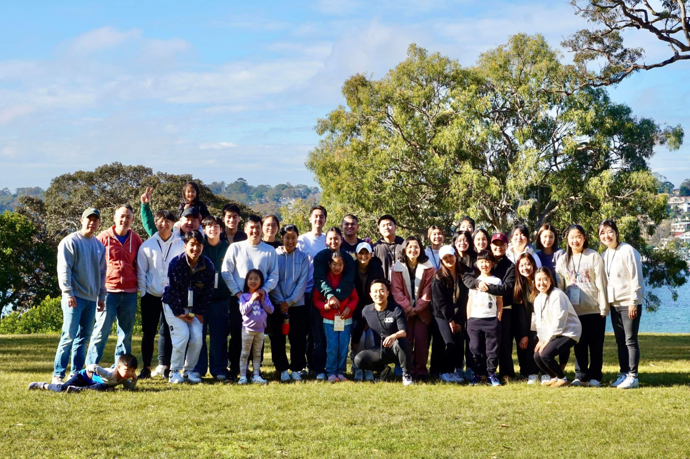

Living God's word, sharing His love.
Grace Community Chapel Sydney was birthed from years of praying and waiting. After visiting Sydney several times over the years, God was making it clear that there was a need for more disciple-making churches that was gospel centered, Spirit-filled, and theologically sound. Once the opportunity finally came, Pastor Paul and his family took up this call in faith with a team of brothers and sisters that was sold on the same vision to make disciples of Jesus Christ and to expand the Kingdom of God. We pray that GCC will join the other churches in Sydney and be part of the greater narrative and vision to make disciples all throughout Sydney, Australia, and beyond.
God in his sovereignty opened doors for Pastor Paul and his family to arrive in Sydney in 2020. The rest of the team is slowly coming to join Pastor Paul as the bans were lifted.
Pastor Paul and the team have been sent out by Grace Community Chapel of NJ gcc.nj. Although an autonomous and independent church plant, GCC Sydney plans to continue to partner with GCCNJ in disciple-making and other Kingdom endeavors to reach the nations. GCC Sydney is also affiliated with the Christian Reformed Church of North America crcna.org denomination, and is currently in the process of joining the Christian Reformed Church Australia.
Grace Community Chapel exists is to raise radical disciples of Jesus Christ that will be released into our communities and the world to make a great impact for the Kingdom of God.
GCC’s vision to make radical disciples will be accomplished by faithfully teaching and preaching the Word of God, building an authentic and gospel-centered community, and by exercising our gifts and talents to reach our communities and the world through local outreach and global missions.